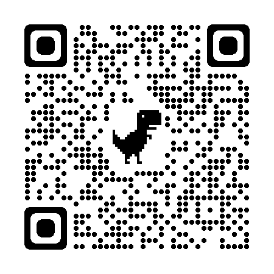

<ion-header [translucent]="true">
  <ion-toolbar>
    <ion-buttons slot="start">
      <ion-back-button defaultHref="/"></ion-back-button>

    </ion-buttons>
  </ion-toolbar>
</ion-header>

<ion-content [fullscreen]="true">
  <div class="">
    <ion-card>
      
      <br> <br>
      <ion-button color="warning" expand="block" id="open-loading" (click)="GenerarQR()">Generar Codigo QR</ion-button>
      <ion-loading class="custom-loading" trigger="open-loading" message="Loading..." [duration]="3000"></ion-loading>
      <ion-list *ngIf="showList">
        <ion-item *ngFor="let item of items">
          <ion-label>{{ item }}</ion-label>
        </ion-item>
      </ion-list>
    </ion-card>
  </div>
</ion-content>
